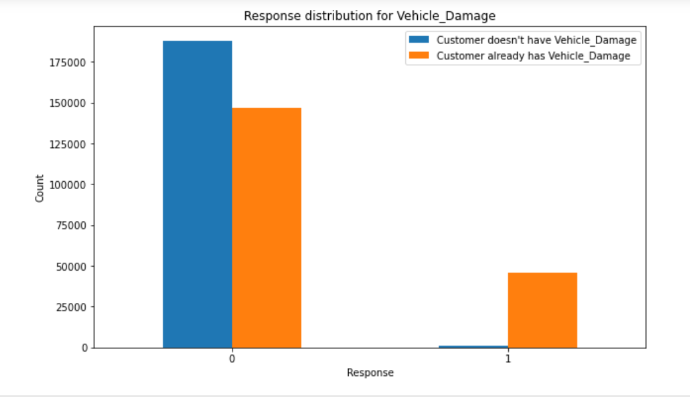

An insurance company offers different types of coverage to its customers. It offers bundle packages, which provides multiple coverage with savings to customers while the company increases customer retention and revenue. A model that predicts whether a customer would be interested in additional coverage is valuable information. This information could enable the company to target the customers that are interested in additional coverage based on demographics, optimizing its business model in terms of customer retention and revenue. In order to capture the customers’ needs, the insurance company must be able to categorize the customers and determine the type of coverage they may be interested in.
Building a model to predict whether a customer would be interested in Vehicle Insurance is extremely helpful for the company because it can then accordingly plan its communication strategy to reach out to those customers and optimize its business model and revenue.
The usual assumption of older the customer, greater is the possibility of wanting health insurance proved to be wrong here.
Gen X (age group : 30 to 45) seems to be the generation that's most likely to be interested (21%) with vehicle insurance.
Also, the customers without any previous car insurance are more interested in getting health insurance.
It was also observed that customers with a previous car damage are more interested in getting the health insurance rather than the ones without any damage.
Among Logistic Regression and Random Forest, the chosen model was Random Forest. Here our focus was on Recall rather than accuracy as we wanted to reduce the False Negatives. The model was also tuned to improve the parameters due to its high recall of 90%.
Previously Insured and Vehicle Damage were the significant factors, so customers who had a vehicle damage in the past and had a previous vehicle insurance should be targeted. Using the Random Forest machine learning that has recall of 90% will speed up and evaluate customers who actually are interested in vehicle insurance, so that we could focus our resources only on the interested customers